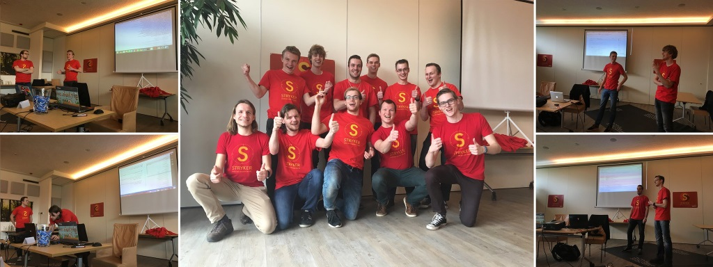

Stryker weekend
Published: 21 February 2017
During the last weekend of January we spent a weekend with ten students from the HAN University and University of Twente developing valuable features for Stryker!
The group was divided into four teams, each with their own goal. Nico Jansen provided a short TypeScript course to get everyone up to speed on developing using TypeScript and after that everyone started working hard on improving Stryker.

Sander and Wessel decided to dive deep into the Stryker codebase to introduce async-await in as much of the Stryker repository as possible. They learned that it was not possible to use it everywhere, but nevertheless it cleaned up the codebase nicely!
Florian and Stijn decided to introduce another new TypeScript feature. They added the strictNullChecks feature to the Stryker codebase. By adding the feature, they force us to write cleaner code. However, before they could compile the codebase with the feature turned on they had to fix two full pages filled with errors, but that didn't stop Olaf and Stijn!
Not everyone decided to try out new TypeScript features, some also decided to improve the core functionality of Stryker: mutating code. Jelle, Mark and Wouter added two new mutators and added tests for one of the existing mutators. Their ArrayDeclarationMutator is capable of creating an empty array whenever you initialize an array with values. For example, the code [1, 2, 'Hello'] could be mutated to: []. They also added the ConstantNumberMutator which will change the declaration of a const to 0.
Last but not least, Nico, Olaf, Diederik and Alex worked on improving the onboarding of new projects by creating the stryker-cli. This tool is capable of integrating Stryker into your project in an interactive way. It's even capable of installing the required packages so you can start using Stryker with minimal effort!
In the end, the weekend was a success. We all had a blast and we managed to develop more features than we had expected. The students exceeded our expectations with their skill and enthusiasm. This is something we definitely want to do more often!

Want to get in touch? Find us on Gitter or Twitter.
Back to blogs